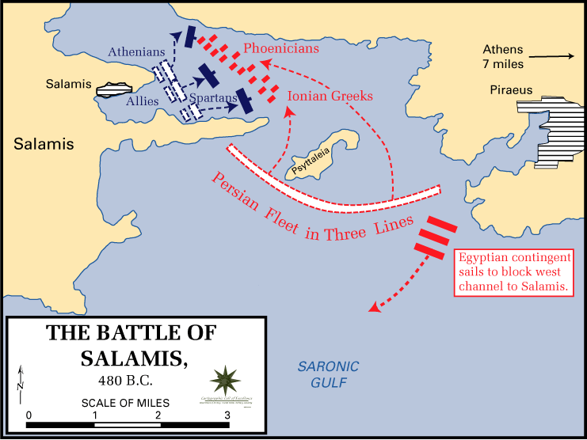

Deniz Savaşı Taktik ve Stratejileri
Deniz savaşları tarihin akışını şekillendirmede, ulusların yükselişini ve çöküşünü etkilemede ve hayati deniz ticaret yollarının kontrolünü sağlamada çok önemli bir rol oynamıştır. Deniz savaşlarında kullanılan taktik ve stratejiler, teknolojideki ilerlemeler, jeopolitik manzaralardaki değişiklikler ve geçmiş çatışmalardan alınan derslerle zaman içinde önemli bir evrim geçirmiştir. Bu yazıda deniz savaşlarında kullanılan taktik ve stratejilere kısaca değineceğim.
Savaş düzenleri, bir filonun etkinliğini optimize etmeyi amaçlayan deniz savaşının uzun zamandır önemli bir yönü olmuştur. Tarih boyunca, her biri dönemin geçerli deniz teknolojilerine ve stratejik hedeflerine göre uyarlanmış çeşitli oluşumlar kullanılmıştır. Örneğin;
a. Savaş Hattı: Yelken Çağı boyunca, savaş hattı düzeni yaygın olarak kullanılmıştır. Gemileri doğrusal bir düzende konumlandırarak, bir yandan tutarlı bir savunma cephesi oluştururken diğer yandan da düşmana karşı azami ateş güçlerini kullanmalarını sağlıyordu.
b. Kama Formasyonu: Kama şeklini andıran bu diziliş Yunanlılar ve Romalılar gibi eski donanmalar tarafından kullanılmıştır. Yoğunlaştırılmış güce odaklanır ve kamanın tepe noktası düşmanın savunmasını yarmayı ve kargaşa yaratmayı amaçlardı.

Salamis savaşı
Saldırı Stratejileri
a. Vur-kaç taktikleri: Daha küçük, daha hızlı gemiler tarafından kullanılan vur-kaç taktikleri, düşman gemilerine sürpriz saldırılar düzenlemeyi ve uzun süreli çatışmalardan kaçınmak için hızla geri çekilmeyi içerir. Yelken Çağı’nda Francis Drake ve Jean Lafitte gibi korsanlar, düşman ikmal hatlarını bozmak ve ekonomik zarar vermek için bu stratejiyi başarıyla uygulamışlardır.
b. Belirleyici Savaş: Bu strateji düşmanın ana filosunu tek ve kesin bir çatışmaya sokarak deniz kuvvetlerini alt etmeyi ve yok etmeyi amaçlar. Amiral Nelson’ın İngiliz filosunun birleşik Fransız ve İspanyol kuvvetlerini mağlup ettiği 1805 Trafalgar Savaşı, bu stratejinin deniz üstünlüğünü sağlamadaki başarısını örneklemektedir.
Savunma Stratejileri
a. Guerre de Course: Bu strateji, ticareti sekteye uğratmak ve rakibin ekonomisini zayıflatmak için donanma gemilerinin düşman ticaret gemilerine saldırdığı ticari baskınları içerir. Amerikan Devrim Savaşı sırasında korsanlar bu stratejiyi İngiliz gemiciliğine karşı etkili bir şekilde kullanmış ve düşmanın savaş çabalarını sürdürme kabiliyetini zayıflatmıştır.
b. Abluka: Deniz ablukaları, düşmanın kilit limanlara veya kıyı bölgelerine erişimini kısıtlamayı, ikmallerini kesmeyi ve onları küresel ekonomiden izole etmeyi amaçlar. Amerikan İç Savaşı sırasında Birlik ablukası, Konfederasyon’un ekonomisini boğduğu ve temel malları ithal etme kabiliyetlerini sınırladığı için başarılı bir abluka stratejisinin dikkate değer bir örneğidir.
Amfibi Operasyonlar, Anti-Erişim/Alan Engelleme (A2/AD) ve Bilgi Savaşı
Amfibi taarruzlar, birliklerin ve teçhizatın denizden karaya taşınmasını içerir ve genellikle düşmanın elindeki kıyı bölgelerini hedef alır. Bu operasyonlar titiz bir planlama, istihbarat toplama ve deniz ve kara kuvvetleri arasında koordinasyon gerektirir. İkinci Dünya Savaşı sırasında Müttefik kuvvetlerin Normandiya’yı işgal ettiği başarılı D-Day çıkarması, düşman kıyılarında bir dayanak noktası oluşturmada koordineli amfibi operasyonların karmaşıklığını ve önemini örneklemektedir.
Modern deniz savaşında, erişim önleme ve alan inkar stratejileri önem kazanmıştır. Bu stratejiler, düşman kuvvetlerinin belirli bölgelere girmesini veya bu bölgelerde faaliyet göstermesini caydırmayı veya engellemeyi, böylece kritik bölgelere erişimlerini engellemeyi amaçlar. A2/AD stratejileri genellikle gemi savar füzeleri, denizaltılar ve mayın tarlaları gibi gelişmiş silah sistemlerinin konuşlandırılmasını ve düşmanın hareket özgürlüğünü engelleyen savunma bölgeleri oluşturulmasını içerir. Güney Çin Denizi’nde A2/AD stratejilerinin artan kullanımı, bu stratejilerin çağdaş deniz savaşındaki önemini ve etkinliğini vurgulamaktadır.
Gelişmiş iletişim teknolojileri ve siber savaşın ortaya çıkışı deniz taktik ve stratejilerine yeni bir boyut kazandırmıştır. Bilgi savaşı, düşmanın komuta ve kontrol sistemlerini bozmak, kuvvetlerini aldatmak ve taktiksel bir avantaj elde etmek için elektronik savaş, siber saldırılar ve istihbarat toplamanın kullanılmasını içerir. Bilgi ve iletişim ağlarından faydalanma yeteneği modern deniz operasyonlarının kritik bir yönü haline gelmiştir.
Deniz savaşında kullanılan taktik ve stratejiler, teknolojideki ilerlemeleri ve değişen jeopolitik dinamikleri yansıtacak şekilde zaman içinde önemli ölçüde evrim geçirmiştir. Tarihi oluşumlar ve belirleyici muharebelerden vur-kaç taktiklerine, A2/AD stratejilerine, amfibi operasyonlara ve bilgi savaşına kadar deniz kuvvetleri, deniz çıkarlarını güvence altına almak ve güç yansıtmak için yaklaşımlarını uyarlamıştır. Teknoloji ilerlemeye devam ettikçe, deniz savaşları daha fazla dönüşüme tanık olacak ve sürekli değişen stratejik bir manzarada gezinmek için sürekli yenilik ve adaptasyon gerektirecektir.